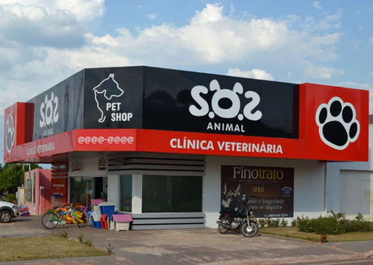

| Home | | Serviços | | Quem Somos | | Contato | |
Fundada em agosto de 2008, S.O.S Animal é uma empresa voltada para o bem estar animal, e por esta razão que nós nos empenhamos para atendê-lo com maior cuidado e carinho. Para isso contamos com profissionais experientes, que realmente gostam e respeitam os animais, pois, valorizamos seus pequenos gestos porque entendemos seu grande significado.
Ser referência no seguimento de pet shop, ofertando a seus clientes uma ampla gama de produtos e serviços com elevada qualidade, destacando-se no atendimento ao cliente, resultando em uma relação de longo prazo e com credibilidade.
Oferecer ao cliente um trabalho em equipe, com colaboração de todos, para passar ao cliente credibilidade e transparência em todos os serviços prestados, sempre com qualidade, visando sempre o cuidado e bem estar do seu animal.
